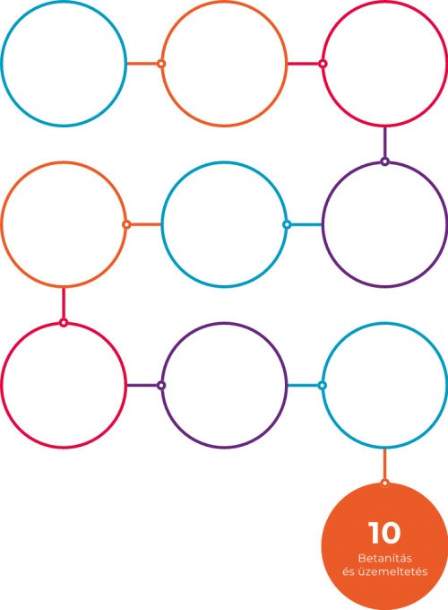

Az egyedi szoftverfejlesztés folyamata az EuroMACC-nél
Egy bonyolultabb rendszer esetében szükség lehet az alkalmazottak betanítására, illetve a rendszerről szóló dokumentáció átadására. Az üzemeltetés során biztosítjuk a rendszer korszerű alapokon nyugvó futtatását, ezen kívül pedig lehetőséget nyújtunk a további fejlesztési igények kielégítésére.
A nulladik lépést azonban Önnek kell megtennie az alábbi űrlap kitöltésével, hogy kollégánk egy napon belül felvehesse Önnel a kapcsolatot:
